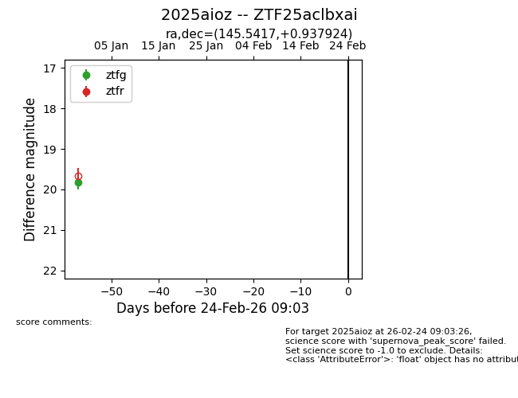
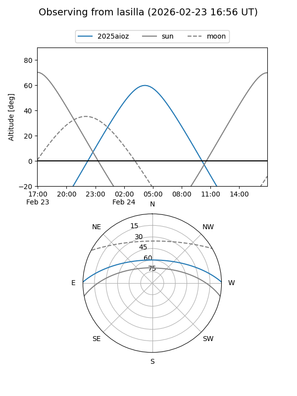
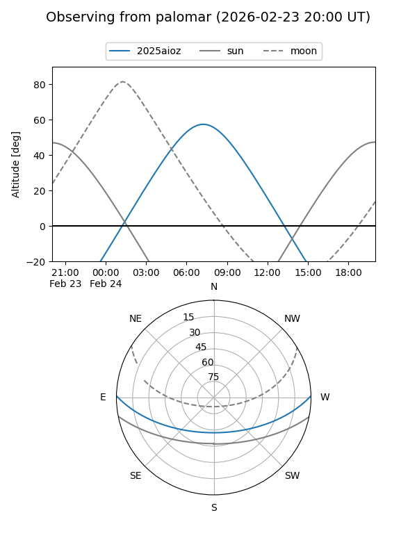

2025aioz
Target 2025aioz at 2025-12-31 09:52
Aliases and brokers:
FINK:
Lasair:
ALeRCE:
TNS:
YSE:
alt names
ZTF25aclbxai (ztf,fink_ztf)
2025aioz (tns,yse)
Coordinates:
equatorial (ra, dec) = 145.5417,+0.93792
equatorial (HMS+DMS) = 09:42:10.02,+00:56:16.53
galactic (l, b) = (234.7673,+37.64264)
Flags:
Photometry:
last ztfg=19.82
1 ztfg detections
Lightcurve

Visibility


Additional plots